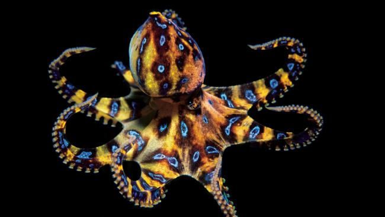

Whole bunch of really interesting facts about octopus'. Like how they escape from sealed jars or crawl across floors to flee captivity through a drain pipe!

Not to mention how just totally badass they look. Ever seen a Blue Ring Octopus?!
The blue-ringed octopuses (genus Hapalochlaena) are three (or perhaps four) octopus species that live in tide pools and coral reefs in the Pacific and Indian Oceans, from Japan to Australia. Their primary habitat is around southern New South Wales, South Australia, and northern Western Australia.[1][2] They are recognized as one of the world's most venomous marine animals.[3] Despite their small size, 12 to 20 cm (5 to 8 in), and relatively docile nature, they are dangerous to humans if provoked and handled, because their venom is powerful enough to kill humans.